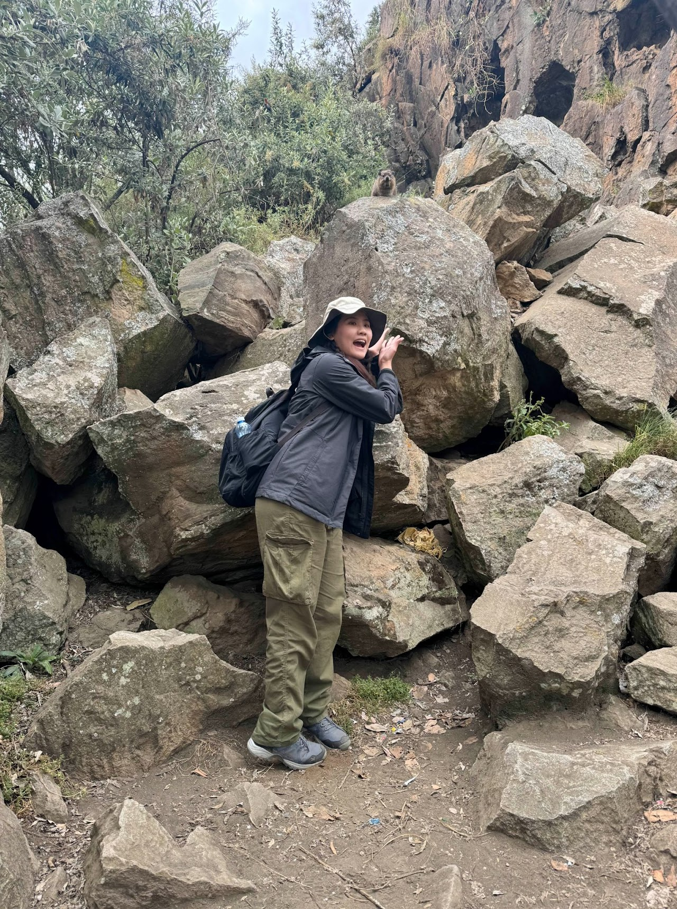
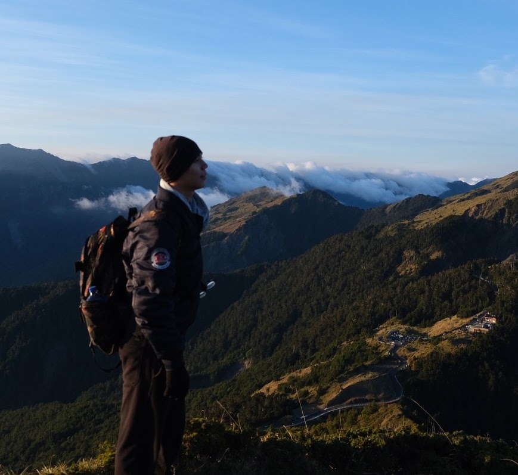
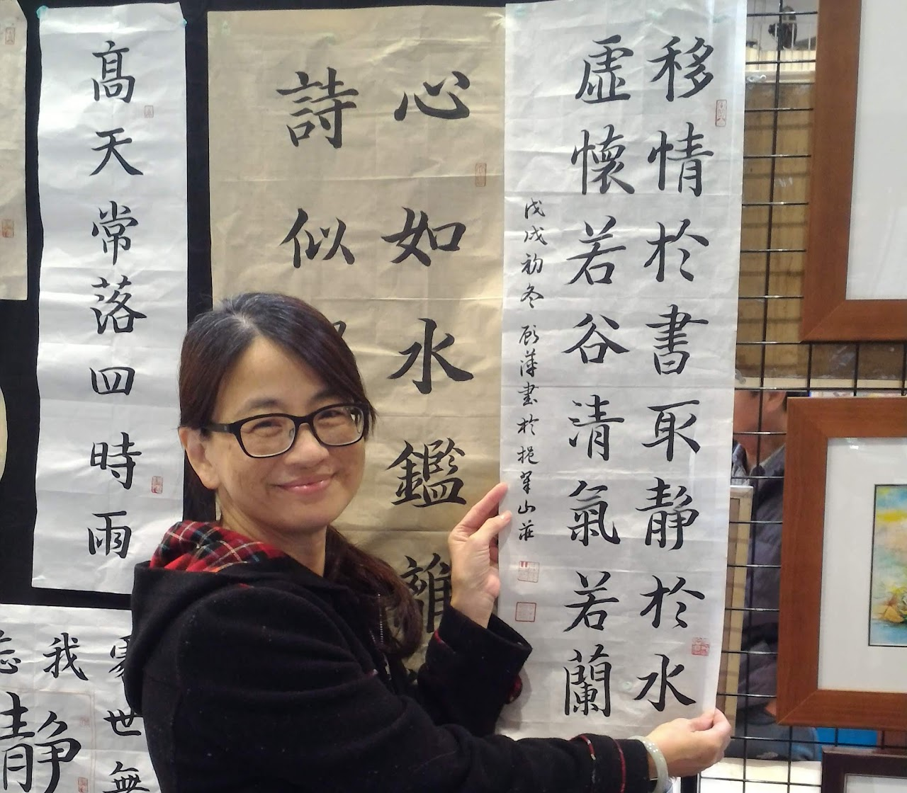
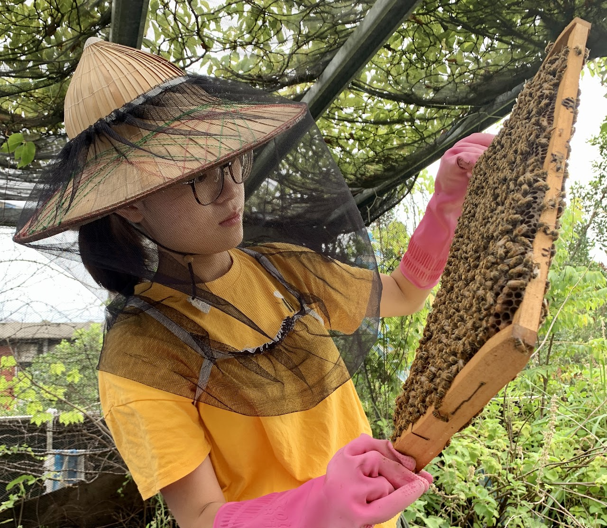
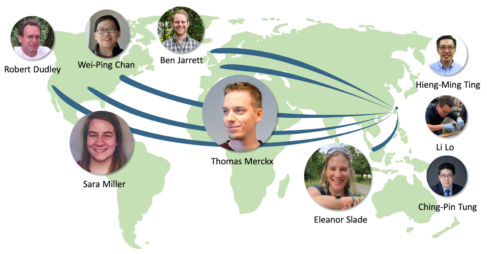

研究團隊
我們是一群充滿熱忱的研究者，致力於探索生物與環境的互動關係。
Principal Investigator
傅 群 (Chun Fu)
Principal Investigator / Ph.D.
專注於建築能源模擬、AI 數據驅動分析與電網韌性研究。 擁有新加坡國立大學博士學位，並具備歐洲跨國能源公司 (Centrica) 實戰經驗。 致力於結合學術理論與業界實務，推動淨零建築與智慧電網的發展。
Postdoctoral Researchers

Tanzil Malik
Background in environmental science and ecology. Research interests include volatile organic compounds, chemical ecology, and the impact of environmental factors on biodiversity.
Mariana Gabrielle Cangco Reyes
Interests include ecological restoration and nature-based solutions. Enjoys scuba diving, going to museums, and chilling on the beach.
Research Assistants

Jeff (蔡沐慈)
Likes street dance, especially dancehall style. Outdoor activities including mountain climbing and hiking appeal to me a lot.
Teddy (楊騰志)
Likes painting and handicrafts, mainly digital painting. Enjoys outdoors and discovering various creatures.
Jojo Wang
Interested in how organisms respond to urbanization. Graduated from University of Chicago. Enjoys reading, board games, and exploring the city.
Master's Students

Yi-Ta Wu (吳奕達)
Passionate about behavioural ecology. Aims to understand how environmental change influences species interactions, specifically burying beetles and mites.
Yu-Shieng Huang (黃榆翔)
Student in IPCS. Research at Fushan Botanical Garden focuses on temperature effects on burying beetle reproductive behavior.
Christine Chao (趙慈萱)
Focuses on the impact of urbanization on burying beetles. Likes crocheting and watching animation series.
River Basham
Exploring potential benefits of the spherical shape adopted by burying beetles during carcass preparation. Enjoys cafe hopping, knitting and bouldering!

Ke-An Hung (洪可安)
Developing a method to analyze gut DNA from burying beetles to detect potential vertebrate species. Passionate about wildlife and nature.
Undergraduate Students
Hsu Chen (徐箴)
Research focuses on how temperature variation affects burying beetles. Enjoys surfskating and keeping reptiles.
Administration Personnel
Jingyun Huang (黃鏡芸)
Center for Atmospheric Resource and Disaster Studies
jingyunhuang@ntu.edu.tw
Ping Ku (顧萍)
Center for Atmospheric Resource and Disaster Studies
pingku@ntu.edu.tw
Megan Chang (張明陽)
Lab Manager
Research assistant at Dept of Entomology, NTU. Interested in marine wildlife and animal conservation.
國際合作網絡
Adrian Chong
National University of Singapore
Collaborating on building environment and ISDB research.
Hussain Kazmi
KU Leuven (Belgium)
Joint research with the ELECTA laboratory on demand response and grid resilience.
Jonathan Roth
Stanford University
Research collaboration on advanced energy systems and data science.
Bianca Picchetti & Matias Quintana
ETH Zürich
Joint research initiatives.
Our Global Network
Connecting minds across continents to solve global challenges.
